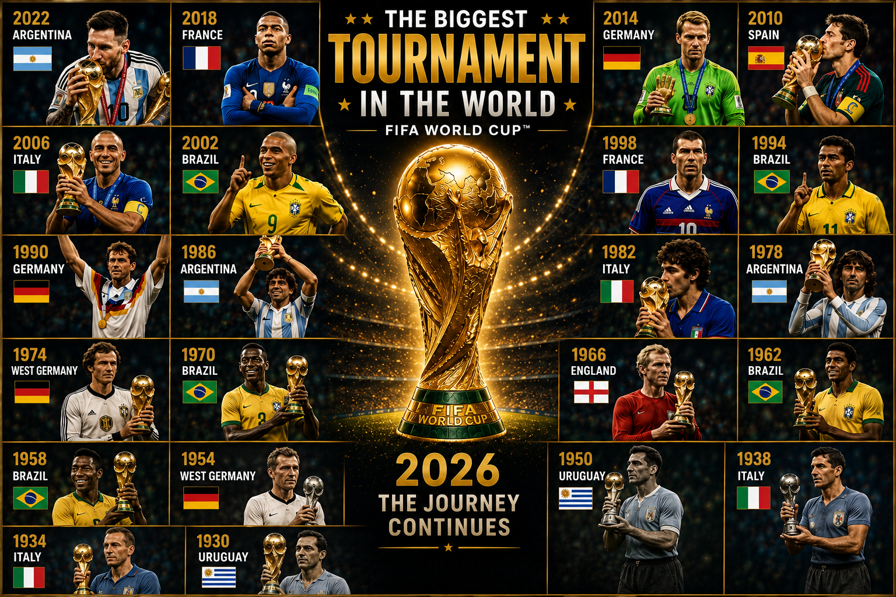
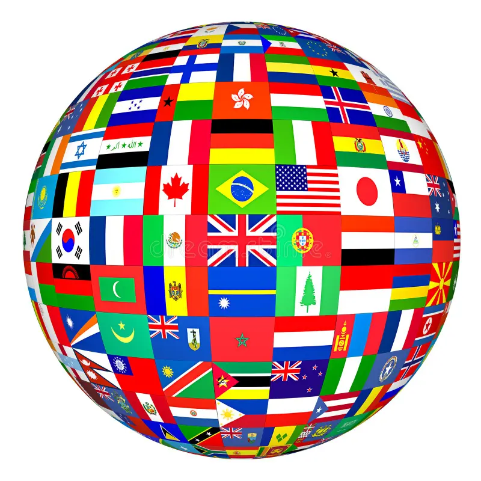

This website is about the history, passion, and future of the FIFA World Cup.

About This Website
This website provides information about FIFA World Cup history,
past champions, final matches, host nations, and the future of
the FIFA World Cup 2026.
What You Can Explore
Past World Cup champions
Final match history
Host countries
World Cup 2026 information
Interactive dashboards
Why It Matters
The World Cup is more than a tournament. It connects countries,
players, fans, and cultures around the world through soccer.
2026 Preview
The 2026 FIFA World Cup will be hosted by the United States,
Mexico, and Canada. It will be the first World Cup with 48 teams.
Past Champions
1930 - Uruguay
1934 - Italy
1938 - Italy
1950 - Uruguay
1954 - West Germany
1958 - Brazil
1962 - Brazil
1966 - England
1970 - Brazil
1974 - West Germany
1978 - Argentina
1982 - Italy
1986 - Argentina
1990 - West Germany
1994 - Brazil
1998 - France
2002 - Brazil
2006 - Italy
2010 - Spain
2014 - Germany
2018 - France
2022 - Argentina
Recent Finals
1990 - Germany defeated Argentina
1994 - Brazil defeated Italy
1998 - France defeated Brazil
2002 - Brazil defeated Germany
2006 - Italy defeated France
2010 - Spain defeated Netherlands
2014 - Germany defeated Argentina
2018 - France defeated Croatia
2022 - Argentina defeated France
Finals show the drama of the World Cup
Every final tells a story of pressure, history, national pride,
and unforgettable moments.
Interactive FIFA World Cup Dashboard
Explore FIFA World Cup statistics, champions, goals, and tournament history
through this interactive dashboard.

One World, One Game
The World Cup brings together nations from every continent.
It is a celebration of soccer, culture, competition, and unity.
Fans from around the world follow their teams with pride,
hope, and passion.
World Cup Host Countries
Host Nations
1930 - Uruguay
1934 - Italy
1938 - France
1950 - Brazil
1954 - Switzerland
1958 - Sweden
1962 - Chile
1966 - England
1970 - Mexico
1974 - West Germany
1978 - Argentina
1982 - Spain
1986 - Mexico
1990 - Italy
1994 - United States
1998 - France
2002 - South Korea and Japan
2006 - Germany
2010 - South Africa
2014 - Brazil
2018 - Russia
2022 - Qatar
2026 - United States, Mexico, and Canada
World Cup Final Attendance
Why Visit This Website?
Learn about World Cup history, legendary finals, host nations,
and everything related to FIFA World Cup 2026.
Learn More About Me
This website was created by Jared Oviedo as part of a web development project.
To learn more about my education, experience, skills, and career goals,
visit my resume page.